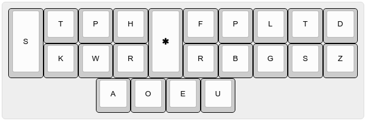
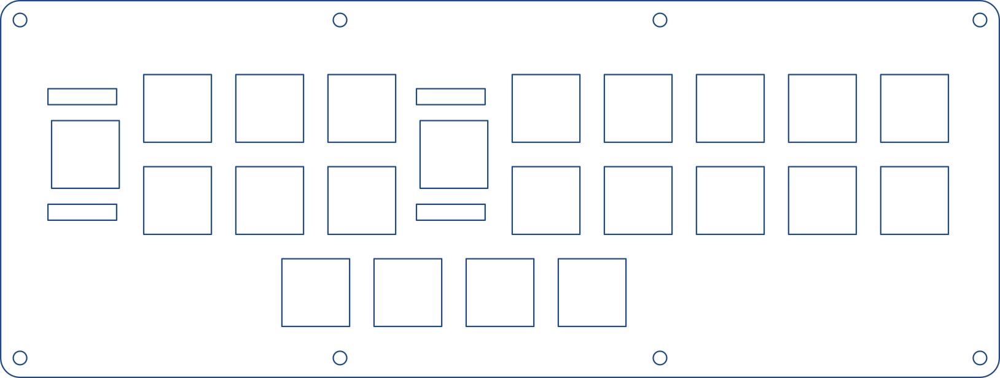
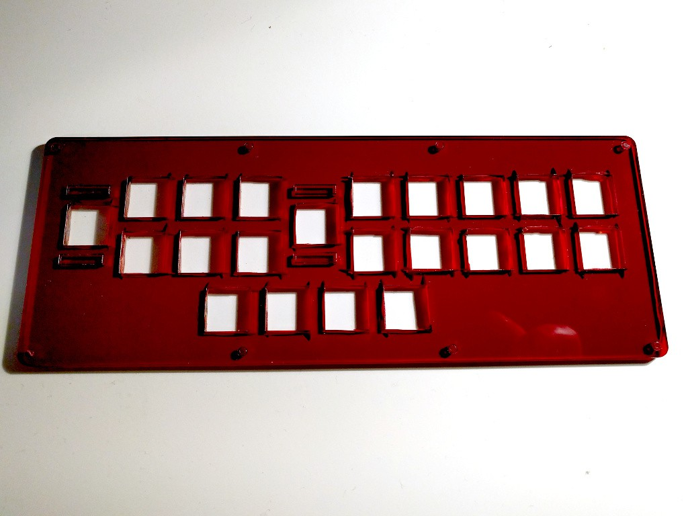

Designing a Keyboard¶
Published on 2016-03-26 in Steno Keyboard.
I’ve been through building a keyboard Alpen Clack , so this time I knew exactly what to do. First I went to http://www.keyboard-layout-editor.com/ and made a keyboard with the steno layout, which, for English at least, looks like this:

Then I clicked on the “raw data” tab, and copied the keyboard definition, which looks like this:
[{a:7,h:2},"S","T","P","H",{h:2},"<i class='fa fa-asterisk'></i>","F","P","L","T","D"],
[{x:1},"K","W","R",{x:1},"R","B","G","S","Z"],
[{x:2.5},"A","O","E","U"
Then I went to http://builder.swillkb.com/ and pasted that code in there. After selecting some options, it generated me an SVG file that looks like this:

I opened that in Libre Office (Inkscape has problem with exporting PDFs with very thin lines), changed the line width to 0.01mm, saved that as PDF and went to the nearby FabLab to have it laser-cut. I actually choose too weak laser power, so the cuts were not whole way through, and then I moved it, so I couldn’t repeat the cutting, but nothing that can’t be fixed with a bit of demeling. Final plate looks like this:

I still have some Gateron Brown switches left from my previous keyboard, so I will be using those. They just snap into those holes – easy enough. Keycaps are a bigger problem – as you can see, I will need several with the same letter, and also for different rows than normally. The keys on your keyboard usually have different height depending on which row they are.So I went to http://pimpmykeyboard.com/ and ordered myself some blank keycaps. I also picked the low-profile ones, which are all the same height. This is actually the most expensive part of this project. Now I’m waiting for the keycaps to arrive.